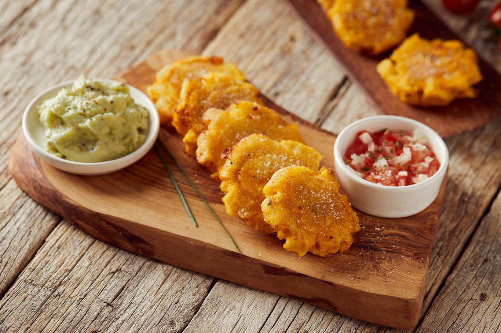
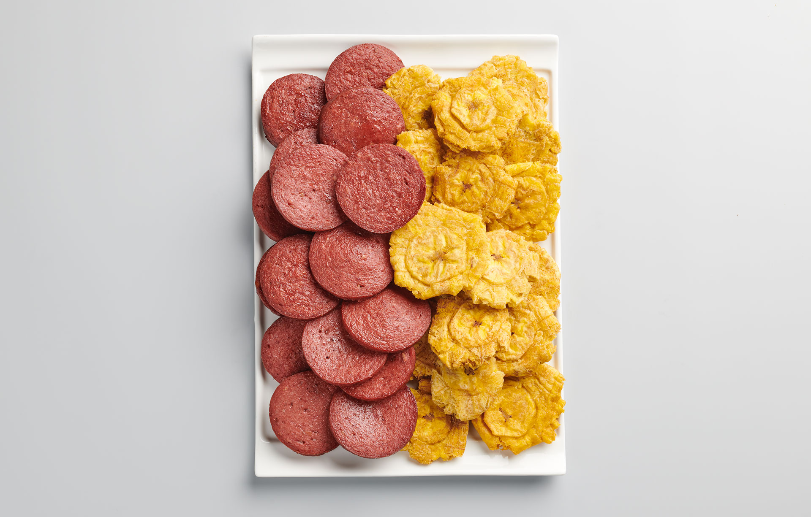

| Platillos | ||
|---|---|---|
| Nombre | Descripcion | Imagen |
| Patacon Colombiano | Es una comida tradicional latinoamericana
en la que se fríen tortitas de plátano verde, quedando crujientes por fuera y tiernas por dentro. Perfecto para un aperitivo o como acompañamiento de otros platos |  |
| Tostones con Salami | El clasico patacon preparado con rodajas de platano frito, combinado con trozos de salami. |  |